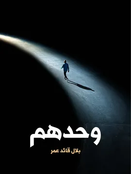

وحدهم

قراءة عربية أصلية محددة النطاق في الصفحات 9 إلى 14 من ملف PDF المرتبط، وليست تلخيصا كاملا للكتاب. نناقش ما تدعمه هذه المقاطع فقط.
وحدهم: بوح شعري على مدى يوم كامل
يقدم المقالح هذه المجموعة الثانية لبلال قائد عمر بحديث عن الأسماء الجديدة التي تلمع في الأدب والشعر الذي يجاهد ليصل إلى الناس عبر نصوص مغامرة. ويرى أن بلالًا من المتمردين على القوالب السائدة، ممن لا يتوسلون الشعرية بالوزن أو القافية بل باللغة وحدها وطاقتها على التجاوز؛ فالنص الجديد حالة فنية تخترع وجودها خارج كل شكل. ويقول إن بلالًا تجاوز في مجموعتيه التجريب نحو مشروعه الشعري، ويبدأ من زمن الطفولة: «صبيًّا كان، يتأرجح بين مآقي العابرين، صحف منثورة، روائح يغيب خلف حوله يتراكم الوهج»، ثم يتواصل: «في غمرة الليل والسحب تغسل الطريق، يحمل قطعة خبز تبللت، يطعمها صديقه الكلب». ويصف المجموعة بأنها بوح شعري مفتوح على يوم كامل من مسائه وليله إلى صبحه، وأن الشاعر لا يعكس انشغالاته بل ينفذ من خلالها إلى ما يشوه الواقع ويرفع منسوب العذاب. ثم تبدأ القصائد بـ«الواحدة مساءً»: «يمر الغريب، يدوس دفاترها، يبعثر علبة ألوانها… تسكن بيتًا منسوجًا من خاصرة الرياح»، و«المدينة التي كانت تزورها محملة بالحلوى واللعب، أغلقت نوافذ الضوء، وفتحت بوابة المقابر».
زاوية وحدود القراءة
قراءة موجزة من ص ٩ إلى ص ١٤ من أصل ٧٢ صفحة، تعرض التقديم ومطلع القصائد، لا الكتاب كاملًا.
الطبعة والقراءة
هذه النسخة من الكتاب صادرة ومتاحة مجانًا بموجب اتفاق قانوني بين مؤسسة هنداوي والسيد الأستاذ بلال قائد عمر.
تنزيل PDF المجاني ↓ القراءة والمصدر الرسمي ↗